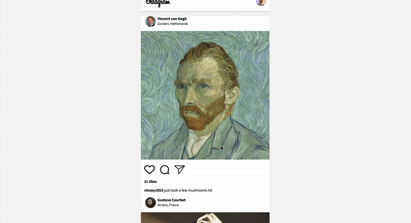

NOVEMBER 27, 2025
From Figma to Code: Building Oldagram
I just shipped my latest solo project: "Oldagram"—an Instagram feed clone built entirely from a Figma design file with no starter code. The challenge? I was given a Figma design file and a blank text editor. This was a complete journey through the frontend workflow.

The Build: Deconstructing Figma
I started by deconstructing the Figma design, building the mobile-first layout from scratch using Semantic HTML and CSS Flexbox. This process taught me how to translate visual design into code structure—identifying spacing, typography, colors, and layout patterns from the design file.
The mobile-first approach was crucial. By starting with the smallest screen size and building up, I ensured the layout would work perfectly on mobile devices before adapting to larger screens. This workflow taught me the importance of progressive enhancement and responsive design principles.
The Logic: Refactoring to Reusable Templates
Once the UI was pixel-perfect, I didn't stop there. I refactored the hard-coded sections into a reusable JavaScript template. Instead of manually writing HTML for each post, I created a function that could generate post HTML from data objects.
This refactoring process was a major learning moment. It showed me the power of DRY (Don't Repeat Yourself) principles and how templates can make code more maintainable. If I needed to change the post structure, I only had to update it in one place, not throughout the entire HTML.
The Interaction: Custom State Management
I implemented a custom state management system where the feed is rendered dynamically from data. This means the entire feed can be controlled by a single data array, and changes to that array automatically update the UI. This pattern is fundamental to modern web development and gave me deep insight into how state-driven applications work.
The state management system forced me to think carefully about data flow. When a user interacts with the app—liking a post, for example—I needed to update the state and then re-render only what changed. This taught me about the relationship between data and UI, a concept that translates directly to frameworks like React.
Double-Tap-to-Like: Surgical DOM Updates
One of the coolest features I implemented was a "double-tap-to-like" feature that updates the DOM surgically without re-rendering the whole page. When a user double-taps on a post image, the like count increments and the heart icon fills, but only that specific post's elements are updated.
This feature taught me about efficient DOM manipulation. Instead of re-rendering the entire feed, I learned to target specific elements and update them directly. This approach is not only more performant but also provides a smoother user experience with no flickering or layout shifts.
The Complete Frontend Workflow
This project took me through the complete frontend workflow:
- Design Analysis: Breaking down the Figma file into components and patterns
- HTML Structure: Creating semantic, accessible markup
- CSS Styling: Mobile-first responsive design with Flexbox
- JavaScript Logic: Transforming static HTML into dynamic templates
- State Management: Building a data-driven application
- User Interactions: Implementing smooth, efficient DOM updates
What I Learned
It's an amazing feeling to watch a static image file turn into a living, clickable application. This project reinforced several key concepts:
- The importance of starting with mobile-first design
- How to translate design files into code structure
- The power of reusable templates and DRY principles
- State management in vanilla JavaScript
- Efficient DOM manipulation techniques
- The complete frontend development workflow
A huge shoutout to Scrimba and Per Borgen for the challenge and guidance throughout this project!
Check out the live demo here →
👉 Check out Scrimba's Full-Stack Developer Career Path
This is an affiliate link that helps support my learning journey at no extra cost to you. You may also receive a discount!